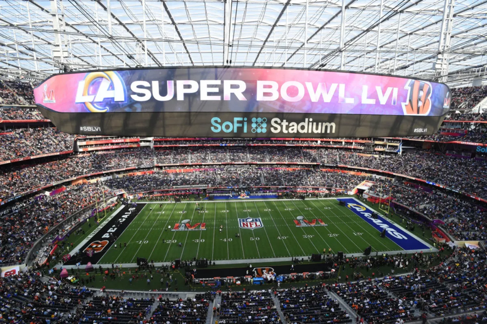
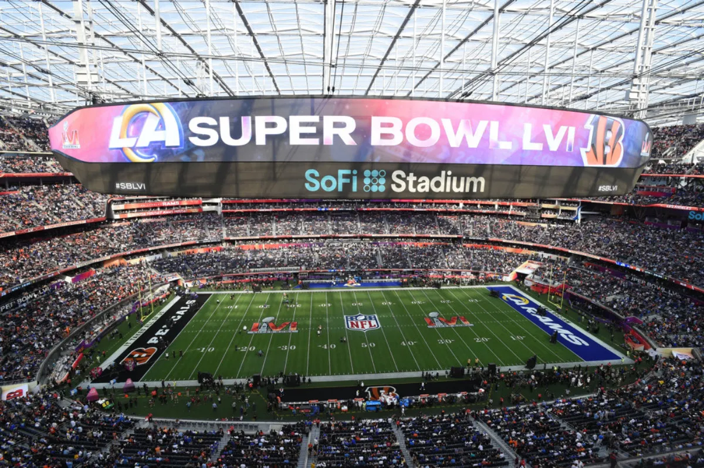

Nov 23, 2024
In this project, I developed a predictive model to forecast annual sales for 100,000 potential restaurant locations.
By leveraging demographic, real estate, and commercial data, I optimized site selection to improve investment decisions.
This work aimed to replace subjective judgment with data-driven insights to enhance operational efficiency and sustainability.

In this project, I built a classification model to predict customer satisfaction for Santander Bank.
Using advanced feature engineering and model evaluation techniques, I identified dissatisfied customers early in their relationship.
This approach enabled the bank to address customer needs and improve retention rates proactively.

In this project, I created a predictive model to determine the likelihood of insurance quote conversions.
I developed a dynamic conversion rate model by analyzing anonymized customer and sales data.
This model allows Homesite to evaluate pricing strategies and optimize customer portfolio segmentation for better business outcomes.
In this project, I perform hyperparameter tuning of the two classifiers by changing at least three different hyperparameters for each classifier. By using random, grid and Bayes search for hyperparameter tuning along with cross-validation, and build three new models of each type (i.e., decision tree, random forest) based on the "best parameters" from each type of tuning.
In this project, I delve into Netflix data and perform exploratory data analysis
to better understand the movie decade!
 

After exploring and cleaning the data a little, this project is going to answer questions like:
What are the most extreme game outcomes?
How does the game affect television viewership?
How have viewership, TV ratings, and ad cost evolved over time?
Who are the most prolific musicians in terms of halftime show performances?

In this project, I analyze video game critic and user scores as well as sales data for the top 400 video games released since 1977.